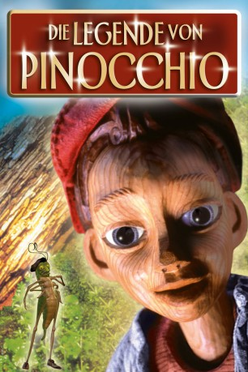
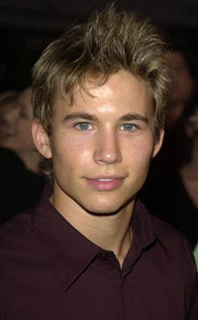
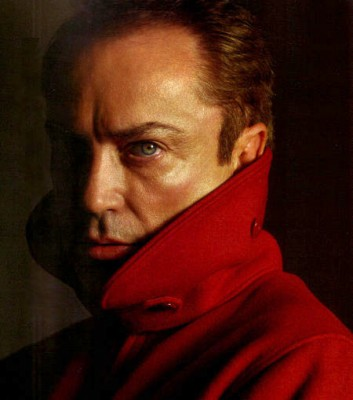
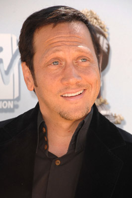

#11016 Die Legende von Pinocchio 
 
 IMDB-Wertung: 5.3 / 10
IMDB-Wertung: 5.3 / 10  Metascore: 0
Metascore: 0 
Der einsame Puppenmacher Gepetto hat eine neue Marionette geschnitzt, einen kleinen Jungen, den er Pinocchio nennt. Die Puppe erwacht zum Leben und bringt die Welt des alten Gepetto vollkommen durcheinander, indem sie, vom rechten Weg abgebracht, nicht in die Schule geht, sondern viele Abenteuer erlebt, stets in dem Bestreben, einmal ein richtiger Junge zu werden.
Jahr: 1996
Dauer: 94 Minuten
FSK: 0
Land: Tschechische Republik Studio: Warner Bros.Tonspuren: DTS - ,
Untertitel:
Auflösung: 1080p (1920x816) Größe: 5253 MB
Genre: Drama, Abenteuer, Fantasy, Familie, Musical
Regisseur: Steve Barron
Drehbuch: Sherry Mills, Steve Barron, Tom Benedek, Barry Berman, Carlo Collodi
Soundtrack: David Goldsmith, Lee Holdridge, Rachel Portman, Craig Taubman
Darsteller:
 Martin Landau als Geppetto
Martin Landau als Geppetto-  Jonathan Taylor Thomas als Pinocchio
 Geneviève Bujold als Leona
Geneviève Bujold als Leona-  Udo Kier als Lorenzini
 Bebe Neuwirth als Felinet
Bebe Neuwirth als Felinet-  Rob Schneider als Volpe
- Corey Carrier als Lampwick
- Marcello Magni als Pastry shop baker
- Dawn French als Baker's wife
- Griff Rhys Jones als Tino
 John Sessions als Professor
John Sessions als Professor- Jean-Claude Drouot als Magistrate
 Jean-Claude Dreyfus als Foreman
Jean-Claude Dreyfus als Foreman- David Doyle als Pepe the Cricket
- Liliyan Malkina als Woman in laundry
- Václav Vydra als Infantino father
- Petr Bednar als Growling father
- Stefan Weclawek als Infantino
- Zdenek Podhurský als Cabineer
- Jirí Kvasnicka als Cabineer
- Dean Cook als Boy with red basketball
- Joe Swash als Fighting boy
 Gary Martin als Giant in play
Gary Martin als Giant in play- Brian May als Massed Peasant Chorus / Chamberlain
- Peter Locke als Unseen aristocracy
- Michael Gregory als Capone - Lorenzini's Henchman (uncredited)
 Wallace Shawn als Pepe the Cricket (uncredited)
Wallace Shawn als Pepe the Cricket (uncredited)- Stevie Wonder als The Balladeer (uncredited)
- Richard Claxton als Saleo
- Teco Celio als Henchman
- Wilfred Benaïche als Henchman
- Erik Averlont als Zito
- Vladimir Koval als Luigi
- Daniela Tolkien als Lampwick's mother
- Anita Zagaria als Luigi's wife
- Gorden Lovitt als Big One attendant
- Jan Slovák als Butler
- Oliver Barron als Boy
- Jake Court als Boy
- Luke DeLeon als Boy
- Kevin Dorsey als Boy
- Thomas Orange als Boy
- Sean Woodward als Boy
- Jirí Patocka als Man with donkey
- Lída Vlásková als Woman in bakery
- Pavel Kocí als Puppeteer
- Jerry Hadley als The Supreme Judge
- Spencer Proffer als Serf
- Peter Malandrone als Serf
- Justin Shirley-Smith als Serf
Datei: X:\Kinder Filme (G-M)\Legende von Pinocchio, Die (1996, FSK0, 1920x816) 3D.mkv seit 17.04.2019
Festplatte: Kinder-Filme+Trick
 Es gibt insgesamt 84 Filme in der Gruppe 'Kinder Filme (G-M)'
Es gibt insgesamt 84 Filme in der Gruppe 'Kinder Filme (G-M)'